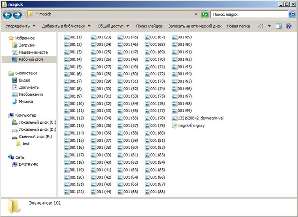
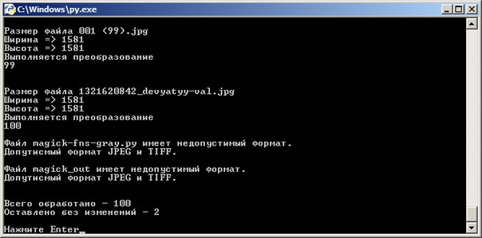

Краткая инструкция по преобразования сканов для отправки в налоговую (ФНС)
В соответствии с пунктом 3.3 приказа ФНС России от 09.11.2010 N ММВ-7-6/535@, изображения для передачи по телекоммуникационным каналам связи (ТКС) должны иметь:
- 256 градаций серого;
- разрешение 150-300 DPI (точек на дюйм);
- глубину цвета 8.
Для быстрого преобразования большого количества изображений [1] в соответсвии с требованиями ФНС необходимо.
- Установть утилиту ImageMagick 32-бита / 64-бита и интерпритатор языка программирования Python 32-бита / 64-бита;
- Скачать скрипт magick-fns-gray(скачать) и поместить его в папку с изображениями, которые необходимо преобразовать;

- Дважды щелкнуть по скрипту левой кнопкой мыши;
- Дождаться завершения преобразования. Вся информация выводится в черном окне.

- Преобразованные файлы появятся в папке magick_out.
Скрипт кроссплатформенный, работает в ОС Linux, Windows, Mac OS и других, которые поддерживаются программой ImageMagick и языком Python.
Материалы по теме.
Сайты
| [1] | Преобразовывать можно от 1 изображения до ..., верхнего ограничения нет, все упирается в параметры компьютера. Время обработки также зависит от размеров изображений и параметров ПК. |